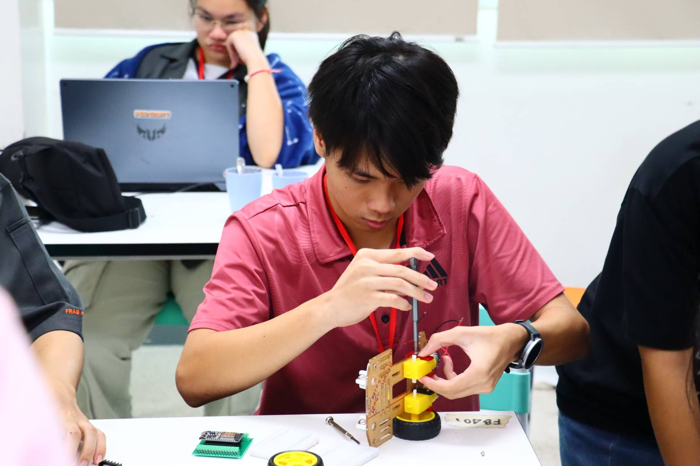
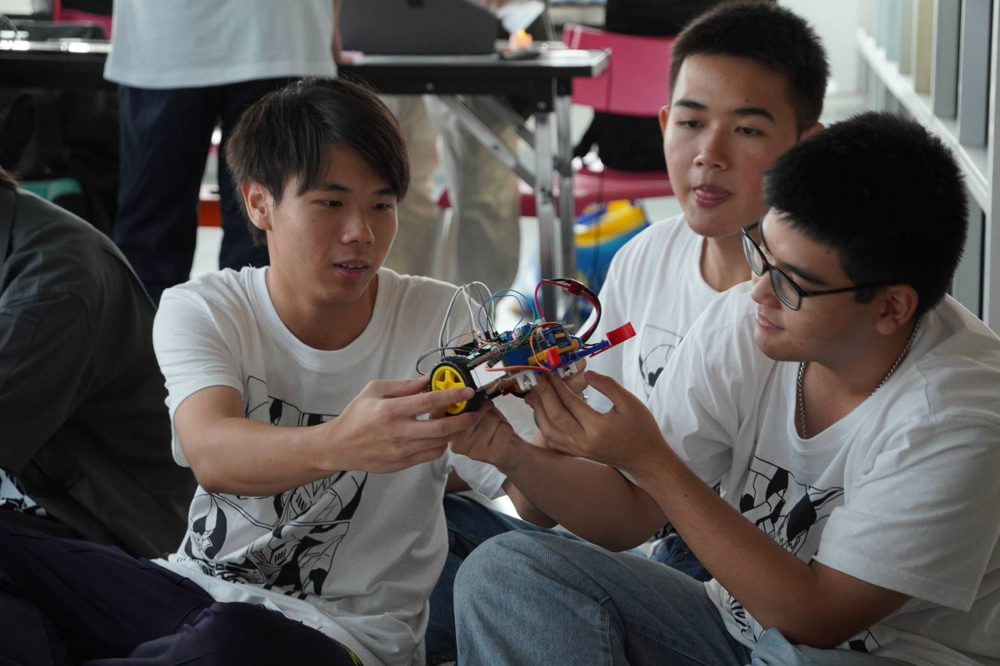
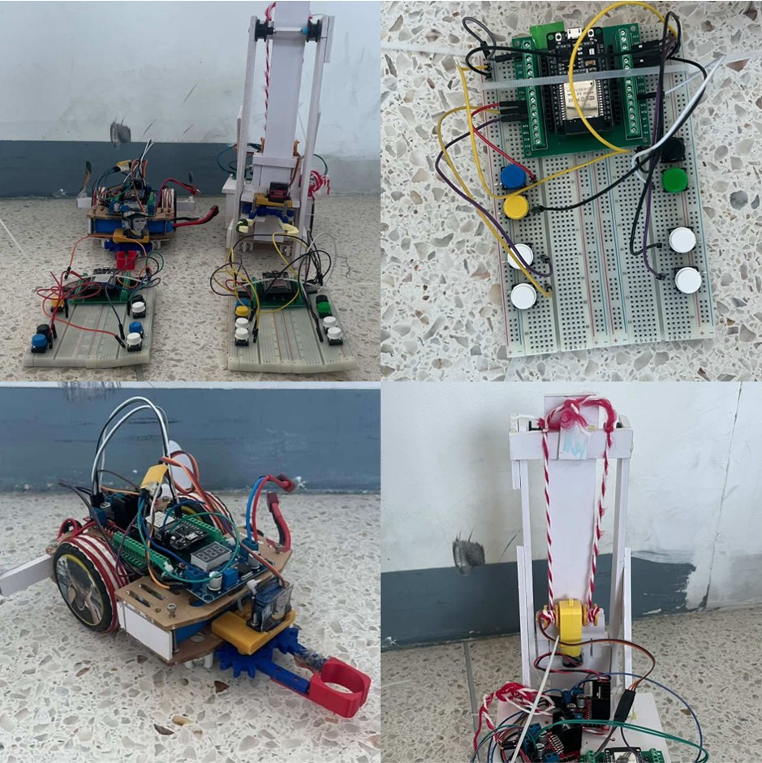

-รับหน้าที่เป็นหัวหน้าในการทำหุ่นยนต์หัวที่2
-ผู้ออกแบบหุ่นยนต์ตัวที่2
-เป็นผู้ประกอบหุ่นยนต์ตัวที่2
-เป็นผู้ปรับแต่งโค้ดให้หุ่นยนต์ตัวที่2

รับผิดชอบงานวางแผนจัดการทีมและการออกแบบโครงสร้างหุ่นยนต์ตัวที่ 2 และระบบรอกของหุ่นยนต์ตัวที่ 1 การประกอบระบบอิเล็กทรอนิกส์ต่อสายไฟเพื่อเชื่อมชิ้นส่วนต่างๆให้ทำงานด้วยกันได้ ไปจนถึงการปรับแต่งชุดคำสั่งด้วยภาษา C/C++ เพื่อเพิ่มประสิทธิภาพในการทำงานให้มีความเสถียรที่มากขึ้นเพื่อให้คนควบคุมหุ่นควบคุมได้ดีมากขึ้นและลื่นไหล

ปัญหาที่พบคือการ Balance น้ำหนักหุ่นยนต์ตัวที่ 1 ที่ยังดีไม่พอทำให้หุ่นยนต์เกือบคว่ำตอนขึ้นเนิน และการออกแบบที่คีบของของหุ่นตัวที่ 2 ที่ไม่แข็งแรงพอเลยทำให้หักตอนซ้อม